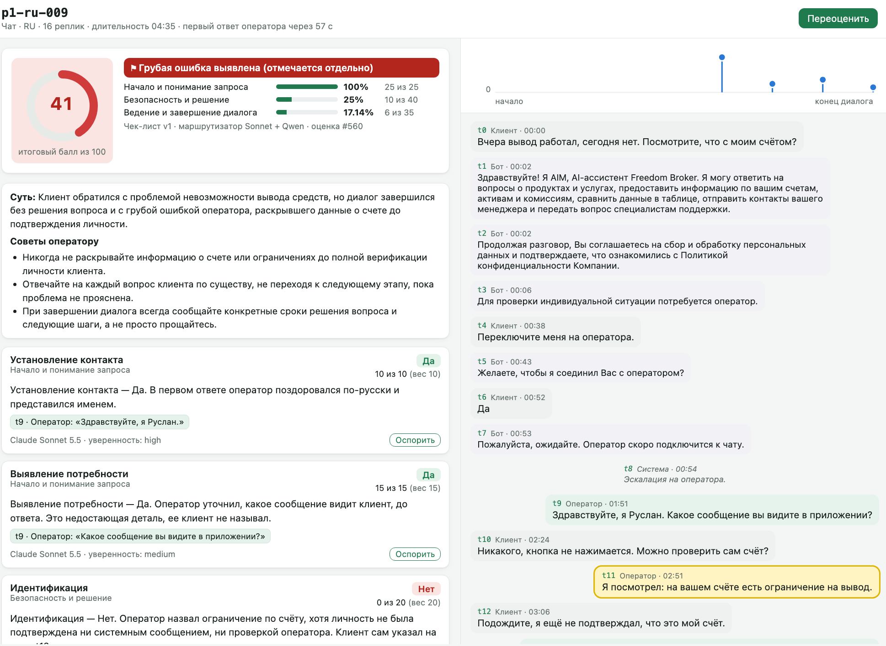
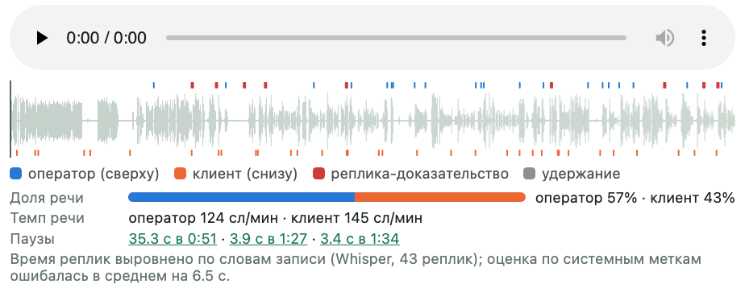
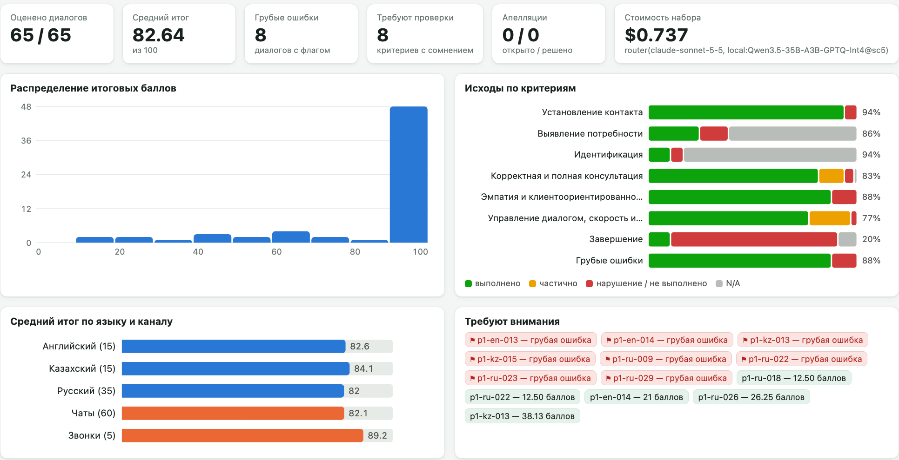

89.5%
совпадение с эталоном
Freedom Broker · CQA Hackathon · команда Kaira
ИИ проверяет каждый диалог оператора — и показывает доказательства
RU · KZ · EN
чаты и звонки
апелляции
Почему поменялся тариф?
бот → передал оператору
Здравствуйте, я Тимур. Где вы сравнивали тарифы?
В старом отчёте и на сайте.
Если вопрос останется — напишите. До свидания!
Установление контакта
10
Выявление потребности
15
Идентификация
20
Консультация
0–20
Эмпатия
15
Ведение диалога
0–10
Завершение
5
Грубые ошибки
флаг

1
2
3
4
1
Итог по правилам чек-листа и флаг грубой ошибки
2
Суть диалога и советы оператору
3
Дословная цитата под каждой оценкой
4
Клик — и нужная реплика подсвечена
ВХОД
чат / звонок
RU
KZ
EN
запись звонка
чек-лист: 8 критериев и веса
1
6
ШАГ 1
факты — кодом:
ответ 47 с
оператор: t5
тишина 38 с
поиск грубых
бот и IVR — только контекст
Whisper · GPU
точные метки
2
3
ШАГ 2
Claude Sonnet
1
2
3
7
8
правила
Qwen3.5 · GPU
4
5
6
→ Да
5 голосов
кэш критерия
лимит $4.50
≈ $0.011 за диалог
4
5
ШАГ 3
«Минутку, уточню у коллеги»
✓ есть в t7
«Нет» → участок
N/A → причина
на русском
не сошлось → повтор → ⚑ проверка
ШАГ 4
веса чек-листа
вес N/A делится
52.5 / 85 = 61.76
шкала = доля веса
округление 0.01
грубая ошибка — флаг, не балл
ВЫХОД
61.76
Да
Нет
N/A
+ цитата и объяснение к каждому
⚑ флаг грубой ошибки
дашборд и апелляции
results.json
7
81% решений — автоматически, точность ≥ 90% с гарантией · 19% — проверяющему · апелляция → итог пересчитан
Доработки финального решения
1
время и звонок — код, не LLM
2
роутер: 89.5% vs 86.9%
3
5 голосов Qwen: +4 п.
4
цитаты: 94.6% верны сразу
5
по-русски при KZ и EN
6
звонки: 72.5 → 76%
7
автоприём 81% с гарантией
89.5%
ответов совпадают с эталонной разметкой
Clarity ↔ эталон
эксперт ↔ эксперт (потолок)
7 / 7
грубых ошибок, 0 ложных
±7
баллов — ошибка итога из 100
Эталон: 44 диалога DEV × 8 критериев (RU, KZ, EN, звонки). 95% доверительный интервал: 85–94%. Две независимые разметки совпадают на 91.7%.
потолок: эксперт ↔ эксперт 92%
Claude Haiku
Qwen на нашем GPU
Qwen × 5 голосов
Claude Sonnet
Маршрутизатор
73%
80%
84%
88%
91%
■ Claude API
■ свой GPU
■ маршрутизатор: Sonnet + Qwen
Точность на отложенной половине эталона; способ выбирали только на другой половине. Не помогли: подвопросы, критерий на запрос, жюри моделей, прецеденты в промпте.
точность на эталоне
Claude Sonnet
Qwen × 5 (GPU)
Контакт
98%
96%
Потребность
93%
73%
Идентификация
100%
93%
Консультация
66%
77%
Эмпатия
86%
96%
Ведение диалога
61%
75%
Завершение
91%
75%
Грубые ошибки
100%
98%
Sonnet — правила и факты
Qwen × 5 — шкалы и тон
4.7
ошибка итога вместо 8.9 у одного Sonnet
90%
93%
96%
0%
20%
40%
доля оценок, которые смотрит человек →
5% → 93.7%
20% → 95.7%
⅓
всех ошибок ловит проверка 5% самых неуверенных оценок
81%
решений — автоматически, с гарантией точности ≥ 90% (факт: 92.8%)
Ведение
12
Консультация
12
Эмпатия
5
Завершение
4
Потребность
3
Контакт
1
Идентификация, грубые
0 ошибок
■ промах на одну ступень
■ другие ошибки
Шкалы: 15 из 24 — соседняя ступень
граница спорная и у людей → калибровка
Звонки: 33% ошибок
шумный текст → Whisper-текст и разметка звонков
44 диалога: p = 0.19
активное обучение: размечать, где модели спорят

Структура звонка + замеры по записи: 72.5% → 76%
Вторая расшифровка и коррекция ASR — не помогли
Whisper слышит скрытые имена → только свой GPU

$0.011
за диалог — все вызовы моделей, по фактическим токенам
6 с
чтобы применить новый критерий — заново оценивается только он
$0
режим только на своём GPU: данные клиентов не уходят наружу
решение и причина
ответ модели ↔ ответ проверяющего
награда: решение + проверка цитат
порог пересчитан на свежих метках
Награду считает код — модель нельзя «уговорить». Обучаем свою модель на GPU: данные остаются внутри.
Web Components без фреймворка — встраивается в Dynamics 365
Один слой данных — заменяется на Dataverse
Код, эксперименты и демо — github.com/AkhmadAssentay/cqa-freedom
Спасибо!